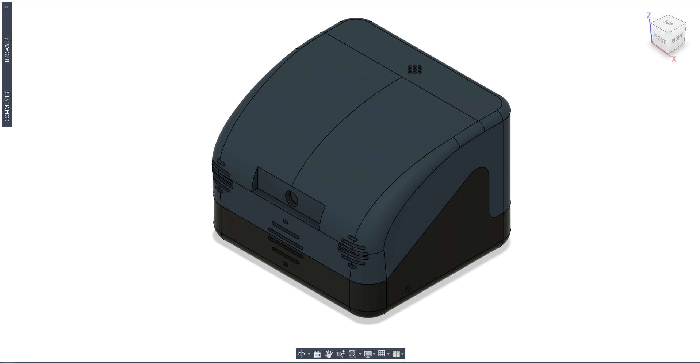
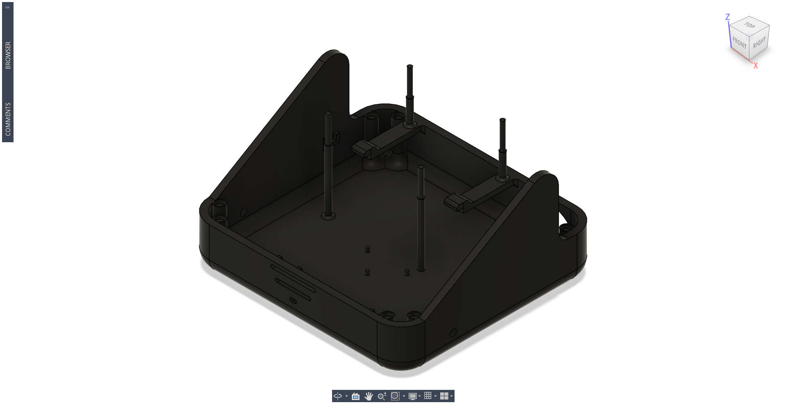
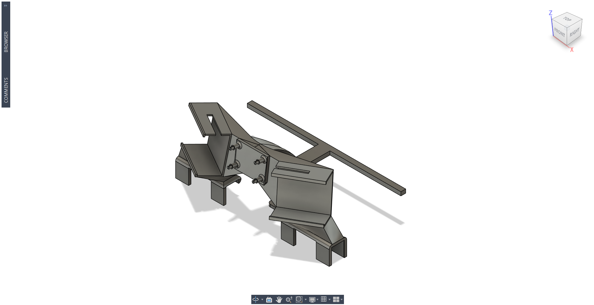
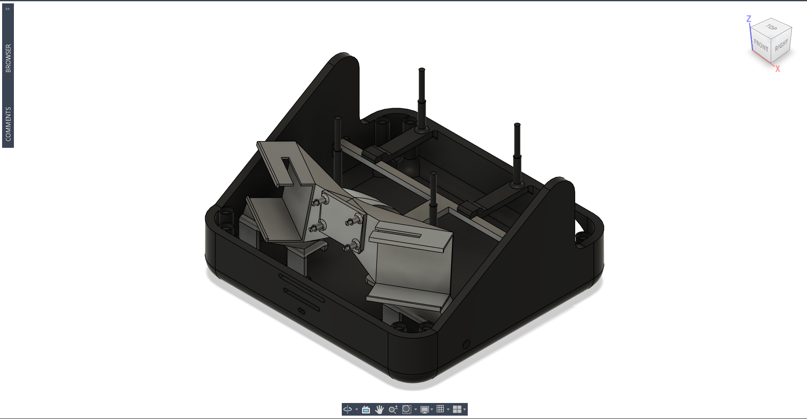
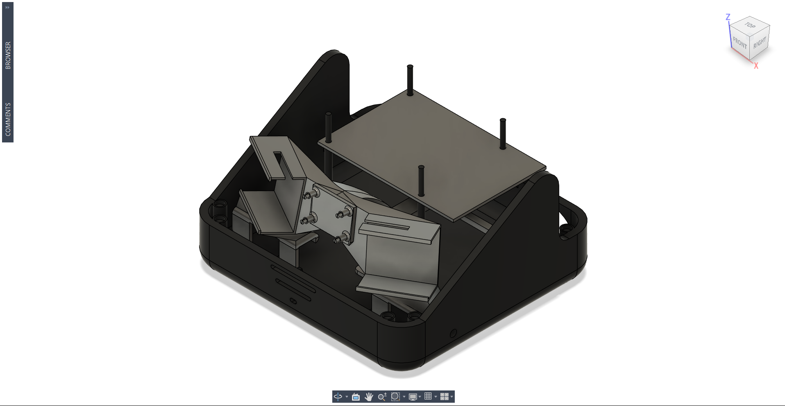
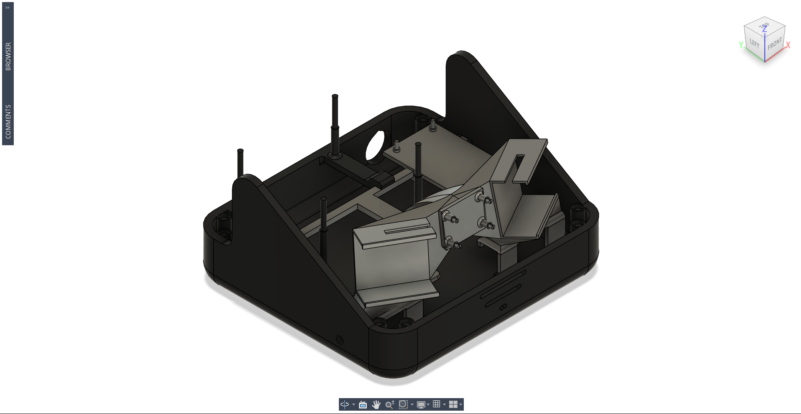
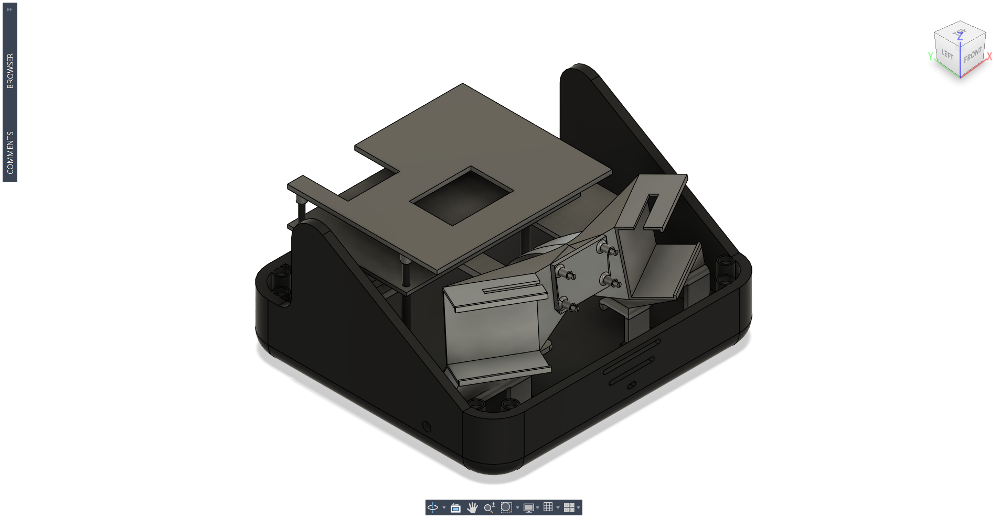

AXIS Nomad
I’m designing Nomad as a small mobile robot and future AXIS endpoint. The CAD fits a Pi, camera, speakers, motors, power electronics, and wiring into a printable chassis.

Fitting the robot before building the shell.
I wanted AXIS to have a physical robot. I’m laying out the hardware first, then shaping the chassis around its clearances.
The CAD includes mounts for the motors, Camera Module 3 Wide NoIR, speakers, Pi, and buck converter. Separate holders reduce chassis reprints.
Nomad is in early development. These are modeled parts, not a tested robot.
What the chassis needs to do
Four constraints guide the current CAD.
Small footprint
Fit the hardware without making the robot unnecessarily large.
Replaceable mounts
Revise one holder without rebuilding the lower chassis.
Printable parts
Split the body into FDM-friendly parts.
Hardware access
Keep connectors and fasteners reachable after assembly.
Where the parts attach

Lower chassis and internal structure
The lower chassis locates each mount. Posts and openings add support and clearance beneath the upper structure.
Mounts built around the actual hardware

Camera, speaker, and motor holders
Separate holders locate the speakers, Camera Module 3 Wide NoIR, and drivetrain motors.

Mounts integrated into the chassis
The assembly shows space conflicts before I change a holder or the chassis.

The Raspberry Pi moved upward
I ran out of floor space, so I moved the Pi onto a deck above the lower components.
The buck converter gets its own holder
I added a fixed holder so the buck converter is not loose inside the enclosure.
The final position still needs wiring clearance and terminal access.

Current printable assembly

3D-printable components
The assembly contains the chassis, component holders, Pi deck, converter holder, electronics deck, and shell concepts.
Parts I can revise separately
Separate printed holders let me update a camera or converter mount without discarding the chassis.
Modeled or being revised
- Lower chassis
- Exterior shell concepts
- Camera mounting
- Speaker mounting
- Motor mounting
- Raspberry Pi packaging
- Buck converter mounting
- Electronics deck
- Separate 3D-printable mounts
Planned
- Complete drivetrain integration
- Power-system refinement
- Custom electronics and PCB integration
- Motor control
- Camera and perception software
- Autonomous navigation
- AXIS software integration
- Prototype testing and mechanical iteration
Inspect the design
I have not published the CAD. A viewer and STEP file will follow when it stabilizes.